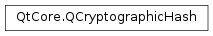

QCryptographicHash¶
Synopsis¶
Detailed Description¶
The
PySide2.QtCore.QCryptographicHashclass provides a way to generate cryptographic hashes.
PySide2.QtCore.QCryptographicHashcan be used to generate cryptographic hashes of binary or text data.Refer to the documentation of the
QCryptographicHash.Algorithmenum for a list of the supported algorithms.
-
class
PySide2.QtCore.QCryptographicHash(method)¶ Parameters: method – PySide2.QtCore.QCryptographicHash.AlgorithmConstructs an object that can be used to create a cryptographic hash from data using
method.
-
PySide2.QtCore.QCryptographicHash.Algorithm¶ Note
In Qt versions before 5.9, when asked to generate a SHA3 hash sum,
PySide2.QtCore.QCryptographicHashactually calculated Keccak. If you need compatibility with SHA-3 hashes produced by those versions of Qt, use theKeccak_enumerators. Alternatively, if source compatibility is required, define the macroQT_SHA3_KECCAK_COMPAT.Constant Description QCryptographicHash.Md4 Generate an MD4 hash sum QCryptographicHash.Md5 Generate an MD5 hash sum QCryptographicHash.Sha1 Generate an SHA-1 hash sum QCryptographicHash.Sha224 Generate an SHA-224 hash sum (SHA-2). Introduced in Qt 5.0 QCryptographicHash.Sha256 Generate an SHA-256 hash sum (SHA-2). Introduced in Qt 5.0 QCryptographicHash.Sha384 Generate an SHA-384 hash sum (SHA-2). Introduced in Qt 5.0 QCryptographicHash.Sha512 Generate an SHA-512 hash sum (SHA-2). Introduced in Qt 5.0 QCryptographicHash.Sha3_224 Generate an SHA3-224 hash sum. Introduced in Qt 5.1 QCryptographicHash.Sha3_256 Generate an SHA3-256 hash sum. Introduced in Qt 5.1 QCryptographicHash.Sha3_384 Generate an SHA3-384 hash sum. Introduced in Qt 5.1 QCryptographicHash.Sha3_512 Generate an SHA3-512 hash sum. Introduced in Qt 5.1 QCryptographicHash.Keccak_224 Generate a Keccak-224 hash sum. Introduced in Qt 5.9.2 QCryptographicHash.Keccak_256 Generate a Keccak-256 hash sum. Introduced in Qt 5.9.2 QCryptographicHash.Keccak_384 Generate a Keccak-384 hash sum. Introduced in Qt 5.9.2 QCryptographicHash.Keccak_512 Generate a Keccak-512 hash sum. Introduced in Qt 5.9.2
-
PySide2.QtCore.QCryptographicHash.addData(data)¶ Parameters: data – PySide2.QtCore.QByteArrayThis function overloads
PySide2.QtCore.QCryptographicHash.addData().
-
PySide2.QtCore.QCryptographicHash.addData(device) Parameters: device – PySide2.QtCore.QIODeviceReturn type: PySide2.QtCore.boolReads the data from the open
PySide2.QtCore.QIODevicedeviceuntil it ends and hashes it. Returnstrueif reading was successful.
-
PySide2.QtCore.QCryptographicHash.addData(data) Parameters: data – str Adds the first
lengthchars ofdatato the cryptographic hash.
-
static
PySide2.QtCore.QCryptographicHash.hash(data, method)¶ Parameters: - data –
PySide2.QtCore.QByteArray - method –
PySide2.QtCore.QCryptographicHash.Algorithm
Return type: Returns the hash of
datausingmethod.- data –
-
PySide2.QtCore.QCryptographicHash.reset()¶ Resets the object.
-
PySide2.QtCore.QCryptographicHash.result()¶ Return type: PySide2.QtCore.QByteArrayReturns the final hash value.
See also
© 2018 The Qt Company Ltd. Documentation contributions included herein are the copyrights of their respective owners. The documentation provided herein is licensed under the terms of the GNU Free Documentation License version 1.3 as published by the Free Software Foundation. Qt and respective logos are trademarks of The Qt Company Ltd. in Finland and/or other countries worldwide. All other trademarks are property of their respective owners.